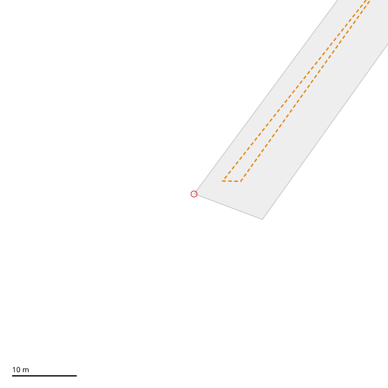
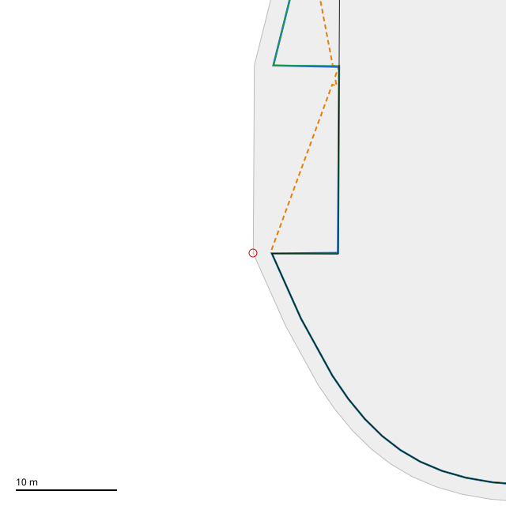
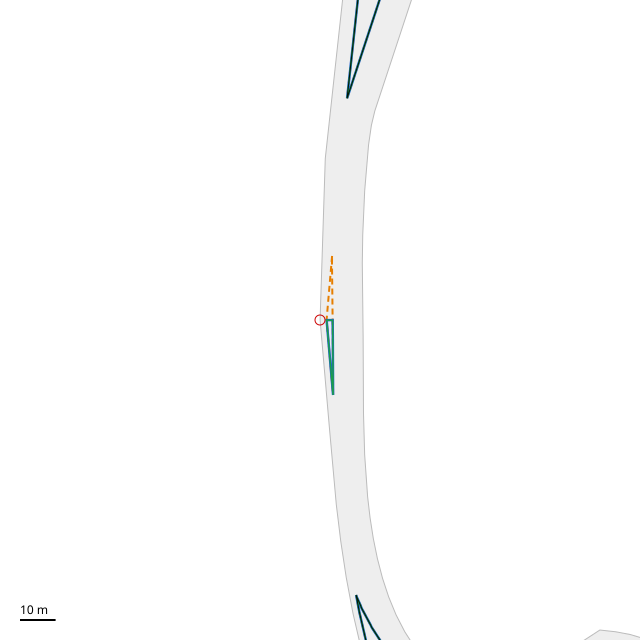
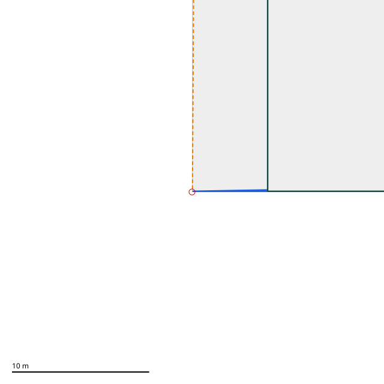
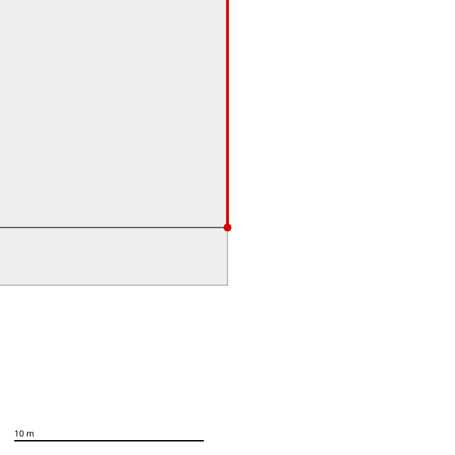
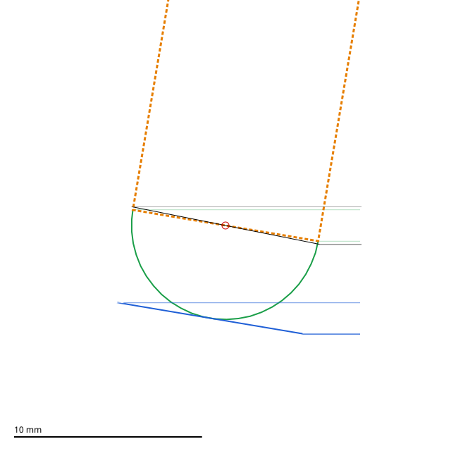
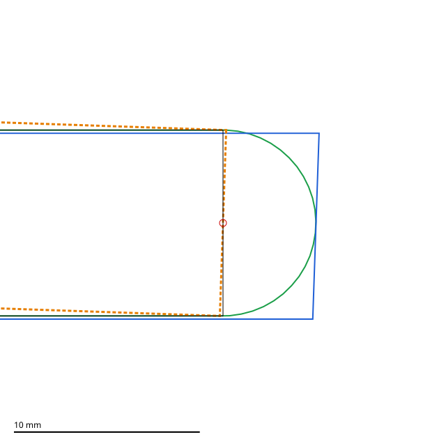

Recomputed from the pour's own ② input with authoring loaded (scratch/clipper2-trial). Numbers: t2-*.out, t3-*.out, t2-tips-*.out, t2-tangent.out. Red circle = the site.
■ ① block (the offset's input) · ━ ours (offsetRingByRects, ease off) · ┅ Clipper2 vertex · ━ Clipper2 stub-min · ━ Clipper2 stub-max

Clipper2's DeltaCallback is asked once per vertex; our depth is per edge. Here ours and both stub modes (each edge fed with its own depth) have nothing near the corner: the strip is narrower than its curbs, so ② goes to zero (their nearest pieces are off the top of the frame). The vertex mode (orange: each vertex given its edge's start depth) keeps a 1–3 m sliver; the nearest point of ours is 112.7 m from it. Across all towns, at ordinary street corners the vertex mode's local Hausdorff is p50 1.4–2.0 m, stub modes 0.001 m. ▶ t2-*.out

The largest street-seam disagreement in any town: 6.498 m, both stub modes. Where the two curb lines meet outside the corner, ours draws the chord between the two bands' ends (offsetRingByRects: the miter only when the apex lies in the corner's cone); Clipper2 has no such rule. Whether that rule is what this picture shows: cause not established.

A ramp-side strip narrower than its curbs. Clipper2 (blue/green) keeps a thin sliver at the site; ours (black) keeps different slivers, the nearest 70.06 m along. Both edges are highway-owned: their depths are H-3's placeholder inside the highway polygon, which the pour subtracts afterwards, and our join there runs the curb line on to the miter by rule (hwyJoin). This trial compares before that subtraction; what survives it was not measured, and why the two keep different slivers: cause not established.

A rim edge has depth 0. At a vertex given 0, Clipper2 emits the input vertex itself (|delta| < Tolerance → pathOut.push(path[j])), so stub-min (blue) pulls the curb back to the ① corner: 5.485 m off ours. stub-max (green) gives the street's own depth there and matches ours (0.000 m).

Red: the carve's output edge along the map rim. Its far end carries __boundary__|right|0; this end is the corner of berlin-road-0|left|9's band, so the Z of that vertex names only the band. The two ends share no owner, so the edge has none. That is the case offsetRingByRects's own comment gives for labelling by containment instead of vertex Z ("two bands share their corner points"). Grey: ①; thin: the carve's bands and wedges.

ε = 5 mm hairline, the chain end at the red circle, drawn at millimetres. Black: ours (mintProtopolygon: a hand stroke with a butt end through the end point). Orange: Clipper2 Butt (the same). Blue: Square (the end ε further out). Green: Round (a 26-vertex arc ε further out, every edge shorter than ②'s 8 mm fold, so ② and the cap see no cap edge).

ε = 5 mm hairline, the chain end at the red circle, drawn at millimetres. Black: ours (mintProtopolygon: a hand stroke with a butt end through the end point). Orange: Clipper2 Butt (the same). Blue: Square (the end ε further out). Green: Round (a 26-vertex arc ε further out, every edge shorter than ②'s 8 mm fold, so ② and the cap see no cap edge).